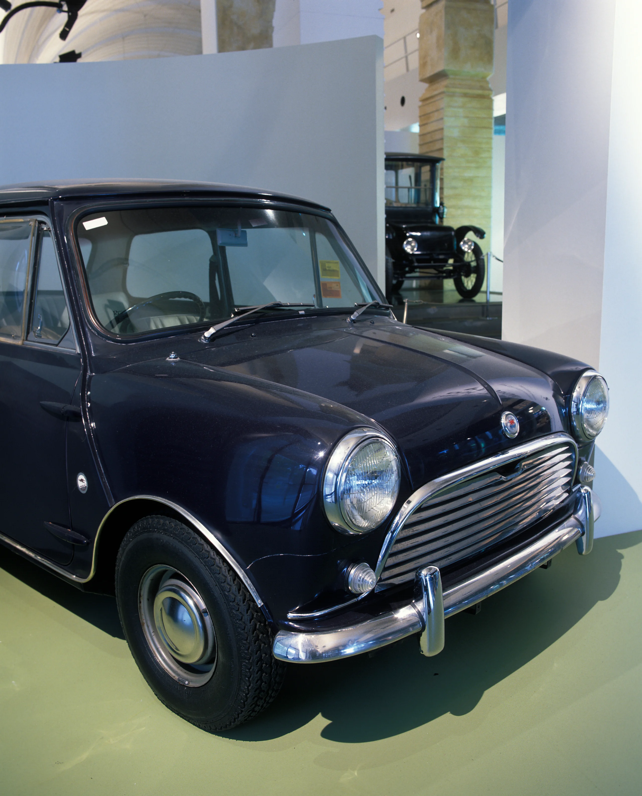

← Road

1928
Sectioned Chrysler Automobile Body
Sectioned automobile body, sedan, full size, Chevrolet, timber / metal, made by Holden Motor Body Builders Ltd, Woodville, South Australia, Australia, 1928-1929

1951
Holden 48-215 (FX) Standard Sedan
Automobile, full size, Holden 48-215 (FX), Standard Sedan, engine No. 2338, production No. 1440S, metal / rubber / textile / glass, made by General Motors-Holden Ltd, Australia, 1951

1970
Leyland Mini K
Motor car, full size, Leyland Mini K, metal/fabric/rubber, Leyland Australia, Zetland, New South Wales, Australia, 1970

1986
Audi 200 Turbo
Sectioned automobile, full size, Audi 200 Turbo, metal/plastic/rubber, made and sectioned by Auto Union GmbH, Germany, 1986, imported into Australia by TKM Automotive Australia Pty Ltd for display at Australian motor shows